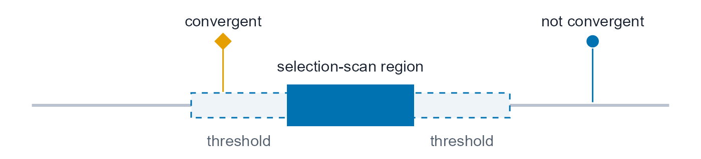
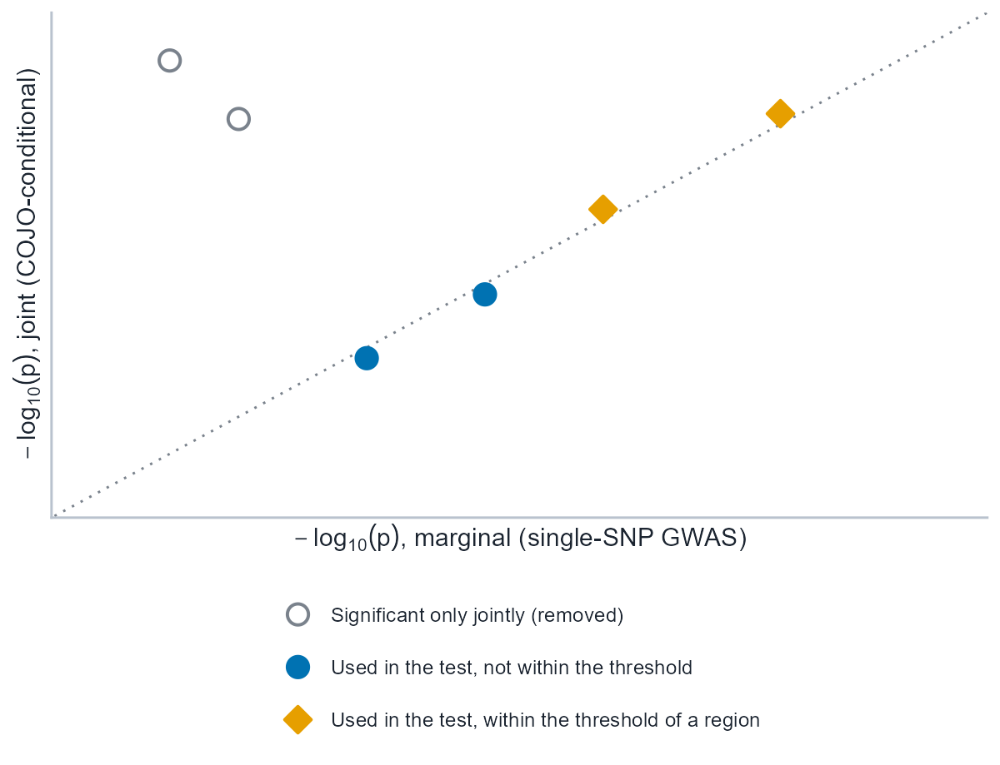
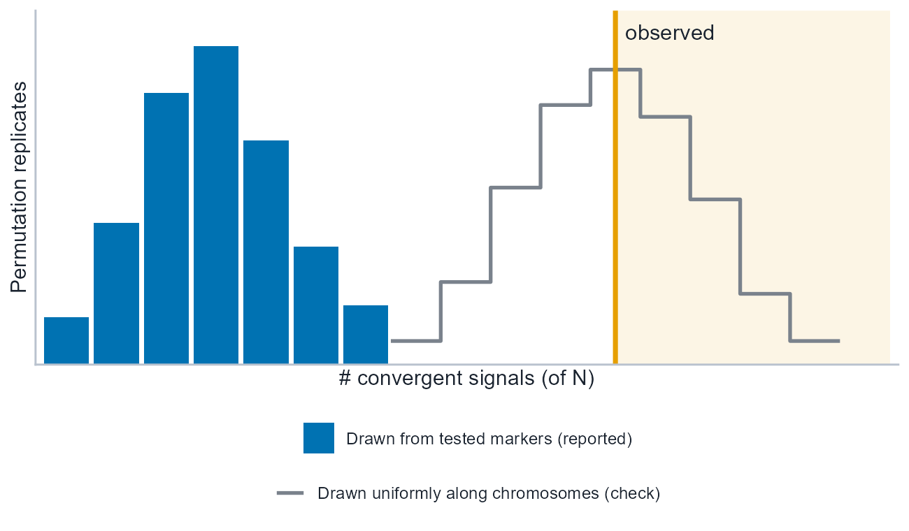
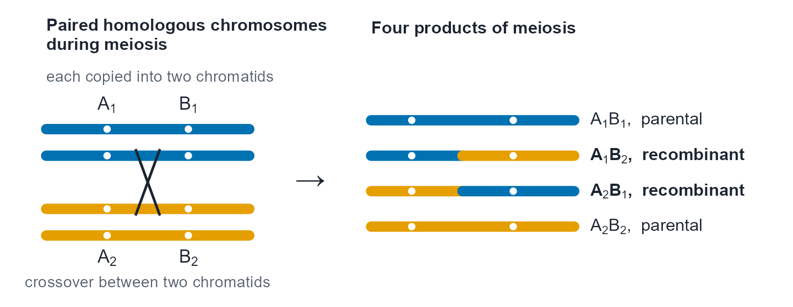
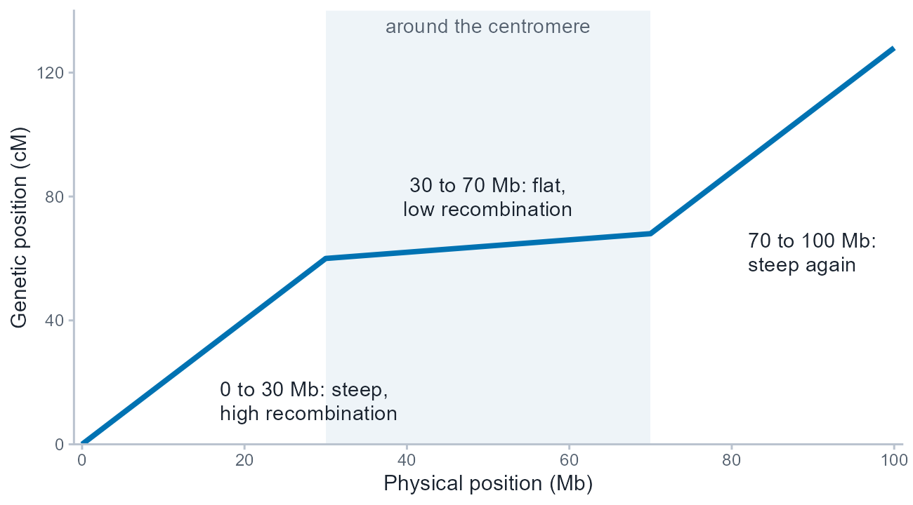

A GWAS finds markers associated with a trait. A selection scan identifies genomic regions, the selection-scan regions, that show signatures of past selection. When GWAS signals lie near those regions, the two are said to converge. This overlap is often taken as evidence that the trait was under selection.
Three choices decide the answer. The app makes each one explicit:
| Step | What to upload or set |
|---|---|
| 1. GWAS summary statistics | One row per marker. Each row gives the marker ID, chromosome and position. It also gives the effect allele, the other allele and the effect-allele frequency. The last columns are the effect size, p-value and sample size. Likely columns are preselected by name and can be changed in the menus that appear after upload. |
| 2. Genotype data | PLINK bed/bim/fam files, or a VCF file, which is converted to PLINK format. The genotypes supply the LD that COJO and clumping require and the allele frequencies used by the allele check. |
| 3. Selection-scan regions | A CSV file of regions with the columns chr, start, end and method. The regions can come from any selection scan, for example XP-nSL (Szpiech et al. 2021), RAiSD (Alachiotis and Pavlidis 2018) or pcadapt (Privé et al. 2020). |
| Optional: placement inputs | A genetic map and a gene annotation, used only by the region placement diagnostic and not by the convergence test. |
| 4. Parameters | The distance threshold in bp is required and comes from LD decay. The COJO p-value threshold defaults to 0.05 divided by the number of markers. The number of permutations defaults to 1,000. A checkbox records whether the GWAS was run on the same genotypes. |
The “Load maize case-study example” button in the sidebar loads the maize data, sets the distance threshold to 10 kb, and runs the full analysis.
A signal counts as convergent when it lies within the distance threshold of a region. LD decay measures how far apart two markers can be and remain correlated. It is therefore the distance over which a selected variant and a GWAS signal can reflect the same locus. A larger, arbitrary distance threshold places so much of the genome near a region that almost any signal counts as convergent. In maize, a 500 kb threshold raised chance convergence to 91.0%.

A signal is convergent if it falls inside a region or within the distance threshold of either end. (Diagram, not data.)
Before any other step, each GWAS marker is matched to the genotype data and its alleles are oriented. A GWAS file can report alleles on the opposite DNA strand, or report the other allele as the effect allele. If this is not corrected, the effect signs no longer match the LD estimated from the genotypes. The COJO joint estimates are then wrong.
| Number shown | Meaning |
|---|---|
| Input markers | Rows in the GWAS file |
| Markers passing the check | Markers matched and oriented, and carried to the next step |
| Match rate | Passing markers as a share of input markers |
| Markers dropped (all reasons) | Input markers minus passing markers, with the count for each reason listed below the summary numbers |
| A/T and C/G markers resolved | Strand-ambiguous markers whose orientation was settled by allele frequency |
| A/T and C/G markers dropped as unresolvable | Strand-ambiguous markers with frequency between 0.45 and 0.55, where frequency cannot tell the strands apart |
| Frequencies corrected | Markers whose reported frequency matched the frequency of the other allele in the genotypes (within 0.05), and was corrected rather than dropped |
The Dropped markers table lists every dropped marker with its reason, and can be downloaded.
Many significant markers can lie in one LD block and reflect a single association. COJO is the conditional and joint analysis in GCTA (Yang et al. 2011, 2012). It selects markers stepwise and tests each one conditional on those already selected. It then fits the selected markers jointly.

Illustration of the plot layout, not data. When clumping is used, the note under the plot states that none of the COJO signals entered the test.
The Independent signals used in the test table lists the signals, or clumped loci, that enter the convergence test. This table and the full GCTA output can both be downloaded.
The verdict states the number of signals within the distance threshold of a region, the share expected by chance and the p-value. It then gives one of three conclusions: more than chance (convergence), fewer than chance (a shortfall), or consistent with chance. A caveat is added when there are fewer than 10 signals, because the test then has little power. A caveat is also added when the two null models reach different conclusions.
| Number shown | Meaning |
|---|---|
| Convergent signals | Signals within the distance threshold of a region, out of all independent signals |
| Observed share | The same count as a percentage |
| Expected by chance | Mean share across permutations under the marker-based null |
| p-value (marker-based null) | (Number of permutations with a count at or above the observed count, plus 1) divided by (number of permutations, plus 1). The p-value is therefore never zero (Phipson and Smyth 2010). |
| Null | Random positions drawn from | Consequence |
|---|---|---|
| Marker-based (reported) | The tested markers on the same chromosome | A GWAS can only detect signals where markers were tested. Random signals are therefore placed only where real signals could arise. |
| Uniform (check) | Any position between the start of the chromosome and its last tested marker | Marker positions are ignored. When regions lie where markers are dense, this null understates chance and overstates convergence. When regions lie where markers are sparse, it does the reverse. |
The box reads “Null models agree”, or turns amber and reads “Null models disagree” with the direction in which the uniform null errs. In maize, the uniform null declared convergence for 50.1% to 92.0% of random signal sets. Across the three case-study data sets, the marker-based null declared convergence for 2.7% to 5.6%, close to the expected 5%.
This section of the Convergence tab shows which genome features predict where the regions lie. This explains a disagreement between the two null models. It is described in full in section 6.

Illustration, not data. The orange line marks the observed count. The shaded area covers the counts at or above it. The p-value uses these counts. In this example, the observed count lies above every replicate of the marker-based null (convergence) but in the middle of the uniform null (no convergence). The two null models therefore disagree. N is the number of independent signals.
One row per independent signal. Each row gives the chromosome, lead marker and position of the signal. It also states whether the signal lies within the distance threshold of a region and gives its distance in bp to the nearest region. A distance of 0 means inside a region. A blank means no region on that chromosome. The table can be downloaded as the convergence detail CSV.
This section of the Convergence tab shows which genome features predict where the selection-scan regions lie. This explains a disagreement between the two null models.
When marker density, recombination rate or gene density predicts which markers lie near regions, the scan has placed its regions according to that feature. For example, the regions may lie where markers are dense or where recombination is low. An overlap between GWAS signals and those regions may then reflect where the scan calls regions rather than selection on the trait at those loci.
The answer comes from a logistic regression, a model for a yes or no outcome. Each feature receives a coefficient that shows whether, and how strongly, it raises or lowers the odds of a marker lying near a region.
| Feature (label in the app) | What it is | Why it is included |
|---|---|---|
| Markers per 100 kb | How many tested markers fall in the same 100 kb window as this marker | Tests whether regions lie where markers cluster. Marker density was the strongest predictor in maize. |
| Gap to nearest marker (bp) | Distance to the closest neighbouring marker | Local marker spacing, a finer-scale measure of density. |
| Minor allele frequency | Frequency of the rarer allele, from the GWAS file | A selective sweep produces an excess of low- and high-frequency derived alleles near the selected site (Fay and Wu 2000). Markers near regions may therefore differ in minor allele frequency. |
| Absolute effect size | Size of the marker's GWAS effect, ignoring its sign | Tests whether markers with large effects on the trait lie near regions more often than other markers. |
| Association strength (−log10 p) | How significant the marker is in the GWAS, where a higher value means a stronger association | Tests whether markers associated with the trait, not only the independent signals, lie near regions. |
| Recombination rate (cM/Mb) | Local recombination per 100 kb window, from an uploaded genetic map (optional) | Genome scans that summarise statistics in windows tend to find more outliers in low-recombination regions (Booker et al. 2020). This happens even in the absence of selection, because the statistics vary more there. |
| Genes per 100 kb | Number of gene starts per 100 kb window, from an uploaded GFF3 or GTF file (optional) | Tests whether regions lie mainly in gene-rich or gene-poor windows. |
Association strength and effect size relate most directly to the trait. When they predict proximity, markers that affect the trait tend to lie near regions, which is consistent with selection on the trait at those loci. When only marker density or recombination rate predicts proximity, region placement is explained by those features rather than by the trait.

One crossover between A and B, involving two of the four chromatids, gives two parental and two recombinant products. When 1 gamete in 100 is recombinant across many meioses, A and B are 1 cM apart. (Diagram, not data.)
When the genetic position (cM) of each map marker is plotted against its physical position (Mb), the curve never falls. It rises unevenly.

Illustration, not data. The slope at any point, in cM per Mb, is the local recombination rate. In maize, crossovers are suppressed across about 100 Mb around each centromere and are frequent toward the chromosome ends (Rodgers-Melnick et al. 2015). The curve is therefore drawn steep toward both ends and flat in the middle, here from about 30 to 70 Mb. Genome scans tend to find more outliers in such low-recombination regions (Booker et al. 2020).
| Coefficient | Meaning | For recombination rate |
|---|---|---|
| Positive (blue bar, to the right of zero) | Higher values of the feature make a marker more likely to lie near a region | Markers near regions lie in higher-recombination windows |
| Negative (grey bar, to the left of zero) | Higher values make a marker less likely to lie near a region | Markers near regions lie in lower-recombination windows |
| Close to zero, with an interval that crosses zero | No consistent effect once the other features are accounted for | Recombination adds nothing beyond the other features |
Each feature is standardised before fitting. A coefficient is therefore the change in the log-odds of lying near a region for a one standard deviation (SD) increase in that feature. The coefficients convert to odds as follows:
| Coefficient | Odds multiplied by ecoefficient | In words, per one SD increase |
|---|---|---|
| +0.5 | 1.65 | The odds of lying near a region rise by about 65% |
| 0 | 1.00 | No change |
| −0.5 | 0.61 | The odds fall by about 39% |
The horizontal line on each bar is a 95% interval from a jackknife over chromosomes, in which the model is refitted with one chromosome left out at a time. A line that crosses zero means the direction of that feature is not consistent across chromosomes.
A coefficient gives the effect of one feature with the other features held constant. A raw comparison does not. The two can therefore disagree. The maize case study shows this:
| Measure | Value | What it suggests |
|---|---|---|
| Raw recombination rate, markers near regions against elsewhere | 3.37 against 2.40 cM/Mb | Markers near regions lie in higher-recombination windows |
| Recombination coefficient with marker density in the model | 0.012 (95% interval −0.05 to 0.07) | No effect of its own |
| Marker density coefficient | 0.479 | Marker density carries the effect |
The raw difference in recombination disappeared once marker density was in the model. This indicates that it was carried by marker density. This is consistent with Rodgers-Melnick et al. (2015). They found that maize crossovers are suppressed across about 100 Mb around each centromere and follow gene density. They also found that genotyping-by-sequencing marker density, together with distance from the telomere, explained most of the variation in crossover density. The ApeKI enzyme used for genotyping-by-sequencing is partially sensitive to DNA methylation and has relatively few recognition sites in the major classes of maize retrotransposons (Elshire et al. 2011). Marker density is therefore lower in methylated, repeat-rich DNA, where crossovers are also rare (Rodgers-Melnick et al. 2015). Thus, the coefficient should be read rather than the raw comparison.
| Case | Strongest predictor | How predictable (AUC, chromosomes withheld) | Reading |
|---|---|---|---|
| Maize, all regions | Marker density, positive (0.479) | 0.652 | Regions lie where markers are dense. A uniform null therefore understates chance overlap. |
| A. thaliana, RAiSD regions | Marker density, negative (−1.254), with regions in windows that have 38% fewer markers | 0.803 | Regions lie where markers are sparse. A uniform null therefore overstates chance overlap. |
| A. thaliana, pcadapt regions | Crossovers per 100 kb, positive (0.223) | 0.551 | Placement is only weakly predictable |
In A. thaliana, recombination entered the model as crossovers per 100 kb rather than as a map slope in cM/Mb. Gene density was not fitted in maize.
The AUC measures how well the model separates markers near regions from other markers, where 0.5 is no better than chance and 1 is perfect separation. In A. thaliana, association strength did not predict proximity to either set of regions.